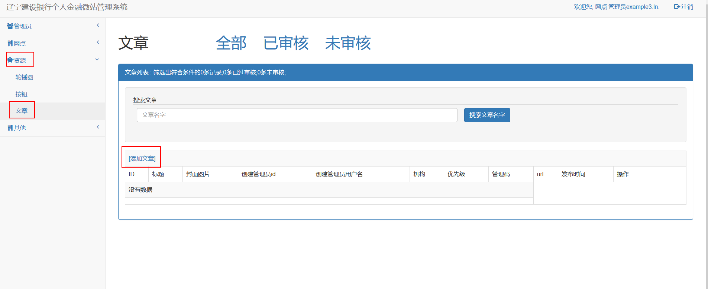
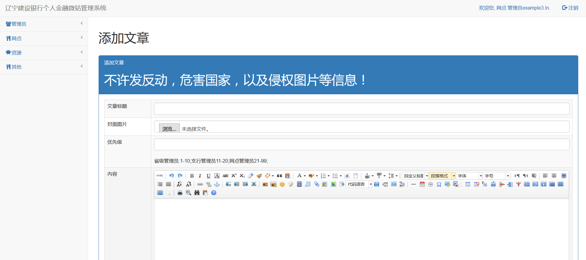
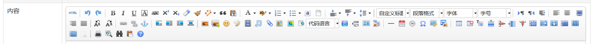
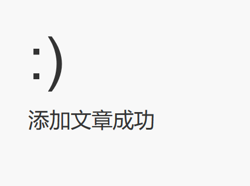
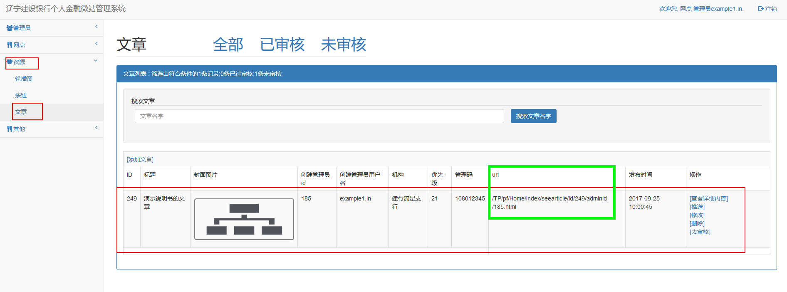
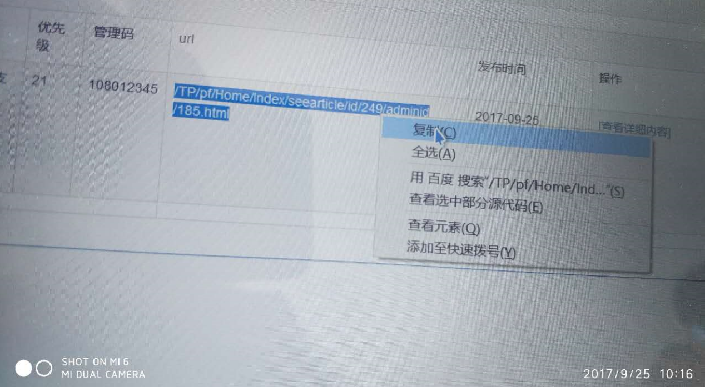
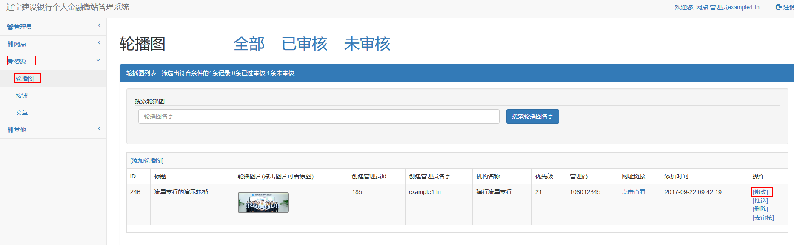
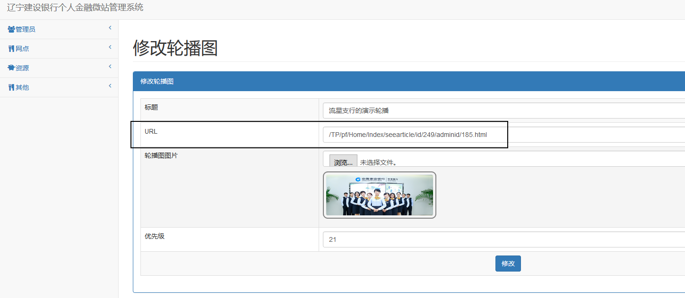

添加文章的方法
1.点击如下图所示的"添加文章"

2.跳转到如下页面

详细说明 : 添加一个文章需要管理员完成4项数据
1.文章标题：为文章定义的题目,根据不同的模板以不同的形式展示给银行的客户.
2.封面图片:
文章展示的图片:可由管理员自行处理后上传.
需要注意的一点是,管理员上传的按钮图片不会显示在微站上,但是考虑到日后的相关的功能维护以及业务升级,还是需要管理员在添加文章的时候上传图片.
3.优先级:
优先级的输入框中只能填写1-99之间的整数阿拉伯数字.
优先级可以定义资源的排序.
本系统依据管理员的级别将优先级分为3个等级
省级管理员:1-10;
支行管理员11-20;
网点管理员21-99;
对应级别的管理员只能输入对应的优先级
优先级的值越小,资源展示的越靠前.
4.内容:
微站管理员可以在内容栏中编辑文章的正文.
在此我们提供了强大且丰富的文章编辑功能(与word相似).管理员可根据自身需要探索如下图所示的按钮.

以上信息全部规范输入后即可成功添加资源,如下图所示:

3.把已创建的文章链接到已有的资源上
接下来着重讲解如何把已创建的文章连接到已经存在的按钮或者轮播图资源上.
首先找到需要展示在微站上面的文章

找到url栏目,如上图中的绿框所示
将文章的url值按住鼠标右键选蓝,然后在蓝色区域单击鼠标右键在弹出的菜单中点击鼠标左键复制

在任意文本编辑器(如:word,记事本)中,使用粘贴(ctrl+v)可得到如下url内容,
/TP/pf/Home/Index/seearticle/id/249/adminid/185.html
以上内容不要做任何修改,记好备用.
接下来找到需要链接的按钮(即银行的客户在微站上点击哪个按钮可以看到管理员指定的文章)

以如上轮播图为例我们点击修改按钮.

把url一栏中的内容修改成刚才获得的链接,如上图所示.然后点击下方修改按钮即可成功将文章链接在指定按钮上.
注意:请仔细核对url的内容,链接的前后不能存在空格以及其他无关字符.
按钮上链接自己发布的文章的方法同刚才提到的轮播图链接文章的方法,篇幅有限不再过多赘述.
提示:上文中提到过修改已过审核的资源会导致被修改的资源立即下架,所以对已过审核的资源做出修改文章链接的操作也会导致资源的下架,等待上级管理员重新通过审核即可.